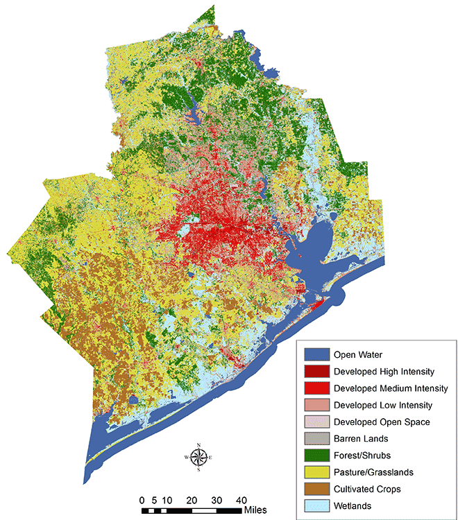
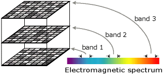
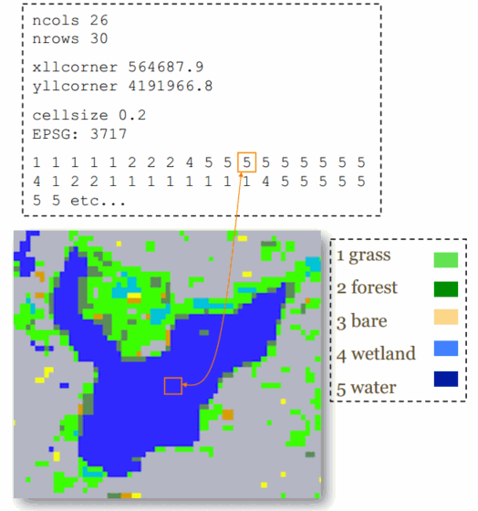

Spatial Data Analysis with R
BayGeo, Spring 2021
Raster Data Pt 1: Importing and Basic Plotting

Raster Data Sources
Remotely Sensed Data
- satellite sensors
- airborne or UAV mounted
- DEMs from radar

Derived or modeled data
- DEMs from interpolation
- interpolated environmental surfaces
- cost surfaces
- Kernel density surface (probability of occurrence)
- rasterized vector data
- many other spatial model outputs
- classified images

Multi-Band Rasters
Rasters with multiple layers are common in multi-spectral data (e.g., Landsat). Each band saves the reflectance in a different part of the electromagnetic spectrum.

Whether saved as separate RasterLayer objects, or a single multi-layered RasterStack or RasterBrick, up to three layers can be combined to produce colors when plotting.

Continuous or Discrete?
Raster data structures are simple arrays of data with a header file. The spatial structure is implicit (they are always rectangular). Cell values can be either continous or discrete.
Continous

Discrete / Categorical

Discrete rasters also have a ‘Raster Attribute Table’ (RAT), which stores the name of each category.
Continuous or Discrete?
- temperature
- land cover
- land use
- soil type
- fire risk
raster package
- read, write and manipulate gridded spatial data
- basic and high-level analysis functions
- smart processing of large files
- import data from the cloud
For details see the vignette: Introduction to the ‘raster’ package
Raster Data Types
RasterLayer - a single layer raster
RasterStack - multi-layer raster
RasterBrick - multi-layer raster (from a single file on disk, faster)
The sp package also has SpatialGrid and SpatialPixel classes. These can be easily converted to Raster* objects using the raster() or as() functions.
Rasters vs. Background Tiles
Rasters are data you can visualize and manipulate.
Tiles are background images you get from online providers for display purposes. They look nice, but what you see is what you get (no ability to manipulate).
Import a GeoTiff
Example: Import a DEM
Let’s import the 5x5° DEM tile (digital elevation model) that encompasses Yosemite. These data come from the SRTM.
The multi-purpose raster() function can be used to make a RasterLayer object from scratch, or import a raster file on disk. To import, pass the filename.
## Import a DEM for Yosemite
srtm_fn <- "./data/srtm_13_05.tif"
file.exists(srtm_fn)
library(raster)
yose_area_dem <- raster(srtm_fn)
class(yose_area_dem)
## Plot the DEM
plot(yose_area_dem)
plot(yose_bnd_ll %>% st_geometry(), col=NA, border="black", lwd=2, add=TRUE)
## [1] TRUE
By default, the raster package will use import functions from rgdal if it’s installed. That means it can install any file format supported by rgdal.
To see all the raster file formats supported by rgdal (and therefore raster), run gdalDrivers().
## name long_name create copy isRaster
## 1 AAIGrid Arc/Info ASCII Grid FALSE TRUE TRUE
## 2 ACE2 ACE2 FALSE FALSE TRUE
## 3 ADRG ARC Digitized Raster Graphics TRUE FALSE TRUE
## 4 AIG Arc/Info Binary Grid FALSE FALSE TRUE
## 5 AirSAR AirSAR Polarimetric Image FALSE FALSE TRUE
## 6 ARG Azavea Raster Grid format FALSE TRUE TRUE
## 7 BAG Bathymetry Attributed Grid FALSE TRUE TRUE
## 8 BIGGIF Graphics Interchange Format (.gif) FALSE FALSE TRUE
## 9 BLX Magellan topo (.blx) FALSE TRUE TRUE
## 10 BMP MS Windows Device Independent Bitmap TRUE FALSE TRUE
## 11 BSB Maptech BSB Nautical Charts FALSE FALSE TRUE
## 12 BT VTP .bt (Binary Terrain) 1.3 Format TRUE FALSE TRUE
## 13 BYN Natural Resources Canada's Geoid TRUE FALSE TRUE
## 14 CAD AutoCAD Driver FALSE FALSE TRUE
## 15 CALS CALS (Type 1) FALSE TRUE TRUE
## 16 CEOS CEOS Image FALSE FALSE TRUE
## 17 COASP DRDC COASP SAR Processor Raster FALSE FALSE TRUE
## 18 COSAR COSAR Annotated Binary Matrix (TerraSAR-X) FALSE FALSE TRUE
## 19 CPG Convair PolGASP FALSE FALSE TRUE
## 20 CTable2 CTable2 Datum Grid Shift TRUE FALSE TRUE
## 21 CTG USGS LULC Composite Theme Grid FALSE FALSE TRUE
## 22 DAAS Airbus DS Intelligence Data As A Service driver FALSE FALSE TRUE
## 23 DERIVED Derived datasets using VRT pixel functions FALSE FALSE TRUE
## 24 DIMAP SPOT DIMAP FALSE FALSE TRUE
## 25 DIPEx DIPEx FALSE FALSE TRUE
## 26 DOQ1 USGS DOQ (Old Style) FALSE FALSE TRUE
## 27 DOQ2 USGS DOQ (New Style) FALSE FALSE TRUE
## 28 DTED DTED Elevation Raster FALSE TRUE TRUE
## 29 E00GRID Arc/Info Export E00 GRID FALSE FALSE TRUE
## 30 ECRGTOC ECRG TOC format FALSE FALSE TRUE
## 31 EEDAI Earth Engine Data API Image FALSE FALSE TRUE
## 32 EHdr ESRI .hdr Labelled TRUE TRUE TRUE
## 33 EIR Erdas Imagine Raw FALSE FALSE TRUE
## 34 ELAS ELAS TRUE FALSE TRUE
## 35 ENVI ENVI .hdr Labelled TRUE FALSE TRUE
## 36 ERS ERMapper .ers Labelled TRUE FALSE TRUE
## 37 ESAT Envisat Image Format FALSE FALSE TRUE
## 38 FAST EOSAT FAST Format FALSE FALSE TRUE
## 39 FIT FIT Image FALSE TRUE TRUE
## 40 FITS Flexible Image Transport System TRUE FALSE TRUE
## 41 FujiBAS Fuji BAS Scanner Image FALSE FALSE TRUE
## 42 GenBin Generic Binary (.hdr Labelled) FALSE FALSE TRUE
## 43 GFF Ground-based SAR Applications Testbed File Format (.gff) FALSE FALSE TRUE
## 44 GIF Graphics Interchange Format (.gif) FALSE TRUE TRUE
## 45 GMT GMT NetCDF Grid Format FALSE TRUE TRUE
## 46 GPKG GeoPackage TRUE TRUE TRUE
## 47 GRASSASCIIGrid GRASS ASCII Grid FALSE FALSE TRUE
## 48 GRIB GRIdded Binary (.grb, .grb2) FALSE TRUE TRUE
## 49 GS7BG Golden Software 7 Binary Grid (.grd) TRUE TRUE TRUE
## 50 GSAG Golden Software ASCII Grid (.grd) FALSE TRUE TRUE
## 51 GSBG Golden Software Binary Grid (.grd) TRUE TRUE TRUE
## 52 GSC GSC Geogrid FALSE FALSE TRUE
## 53 GTiff GeoTIFF TRUE TRUE TRUE
## 54 GTX NOAA Vertical Datum .GTX TRUE FALSE TRUE
## 55 GXF GeoSoft Grid Exchange Format FALSE FALSE TRUE
## 56 HDF4 Hierarchical Data Format Release 4 FALSE FALSE TRUE
## 57 HDF4Image HDF4 Dataset TRUE FALSE TRUE
## 58 HDF5 Hierarchical Data Format Release 5 FALSE FALSE TRUE
## 59 HDF5Image HDF5 Dataset FALSE FALSE TRUE
## 60 HF2 HF2/HFZ heightfield raster FALSE TRUE TRUE
## 61 HFA Erdas Imagine Images (.img) TRUE TRUE TRUE
## 62 HTTP HTTP Fetching Wrapper FALSE FALSE TRUE
## 63 IDA Image Data and Analysis TRUE FALSE TRUE
## 64 IGNFHeightASCIIGrid IGN France height correction ASCII Grid FALSE FALSE TRUE
## 65 ILWIS ILWIS Raster Map TRUE TRUE TRUE
## 66 INGR Intergraph Raster TRUE TRUE TRUE
## 67 IRIS IRIS data (.PPI, .CAPPi etc) FALSE FALSE TRUE
## 68 ISCE ISCE raster TRUE FALSE TRUE
## 69 ISIS2 USGS Astrogeology ISIS cube (Version 2) TRUE FALSE TRUE
## 70 ISIS3 USGS Astrogeology ISIS cube (Version 3) TRUE TRUE TRUE
## 71 JAXAPALSAR JAXA PALSAR Product Reader (Level 1.1/1.5) FALSE FALSE TRUE
## 72 JDEM Japanese DEM (.mem) FALSE FALSE TRUE
## 73 JP2OpenJPEG JPEG-2000 driver based on OpenJPEG library FALSE TRUE TRUE
## 74 JPEG JPEG JFIF FALSE TRUE TRUE
## 75 JPEG2000 JPEG-2000 part 1 (ISO/IEC 15444-1), based on Jasper library FALSE TRUE TRUE
## 76 KMLSUPEROVERLAY Kml Super Overlay FALSE TRUE TRUE
## 77 KRO KOLOR Raw TRUE FALSE TRUE
## 78 L1B NOAA Polar Orbiter Level 1b Data Set FALSE FALSE TRUE
## 79 LAN Erdas .LAN/.GIS TRUE FALSE TRUE
## 80 LCP FARSITE v.4 Landscape File (.lcp) FALSE TRUE TRUE
## 81 Leveller Leveller heightfield TRUE FALSE TRUE
## 82 LOSLAS NADCON .los/.las Datum Grid Shift FALSE FALSE TRUE
## 83 MAP OziExplorer .MAP FALSE FALSE TRUE
## 84 MBTiles MBTiles TRUE TRUE TRUE
## 85 MEM In Memory Raster TRUE FALSE TRUE
## 86 MFF Vexcel MFF Raster TRUE TRUE TRUE
## 87 MFF2 Vexcel MFF2 (HKV) Raster TRUE TRUE TRUE
## 88 MRF Meta Raster Format TRUE TRUE TRUE
## 89 MSGN EUMETSAT Archive native (.nat) FALSE FALSE TRUE
## 90 NDF NLAPS Data Format FALSE FALSE TRUE
## 91 netCDF Network Common Data Format TRUE TRUE TRUE
## 92 NGSGEOID NOAA NGS Geoid Height Grids FALSE FALSE TRUE
## 93 NGW NextGIS Web TRUE TRUE TRUE
## 94 NITF National Imagery Transmission Format TRUE TRUE TRUE
## 95 NTv1 NTv1 Datum Grid Shift FALSE FALSE TRUE
## 96 NTv2 NTv2 Datum Grid Shift TRUE FALSE TRUE
## 97 NWT_GRC Northwood Classified Grid Format .grc/.tab FALSE FALSE TRUE
## 98 NWT_GRD Northwood Numeric Grid Format .grd/.tab TRUE TRUE TRUE
## 99 OZI OziExplorer Image File FALSE FALSE TRUE
## 100 PAux PCI .aux Labelled TRUE FALSE TRUE
## 101 PCIDSK PCIDSK Database File TRUE FALSE TRUE
## 102 PCRaster PCRaster Raster File TRUE TRUE TRUE
## 103 PDF Geospatial PDF TRUE TRUE TRUE
## 104 PDS NASA Planetary Data System FALSE FALSE TRUE
## 105 PDS4 NASA Planetary Data System 4 TRUE TRUE TRUE
## 106 PLMOSAIC Planet Labs Mosaics API FALSE FALSE TRUE
## 107 PLSCENES Planet Labs Scenes API FALSE FALSE TRUE
## 108 PNG Portable Network Graphics FALSE TRUE TRUE
## 109 PNM Portable Pixmap Format (netpbm) TRUE FALSE TRUE
## 110 PostGISRaster PostGIS Raster driver FALSE TRUE TRUE
## 111 PRF Racurs PHOTOMOD PRF FALSE FALSE TRUE
## 112 R R Object Data Store FALSE TRUE TRUE
## 113 Rasterlite Rasterlite FALSE TRUE TRUE
## 114 RDA DigitalGlobe Raster Data Access driver FALSE FALSE TRUE
## 115 RIK Swedish Grid RIK (.rik) FALSE FALSE TRUE
## 116 RMF Raster Matrix Format TRUE FALSE TRUE
## 117 ROI_PAC ROI_PAC raster TRUE FALSE TRUE
## 118 RPFTOC Raster Product Format TOC format FALSE FALSE TRUE
## 119 RRASTER R Raster TRUE TRUE TRUE
## 120 RS2 RadarSat 2 XML Product FALSE FALSE TRUE
## 121 RST Idrisi Raster A.1 TRUE TRUE TRUE
## 122 SAFE Sentinel-1 SAR SAFE Product FALSE FALSE TRUE
## 123 SAGA SAGA GIS Binary Grid (.sdat, .sg-grd-z) TRUE TRUE TRUE
## 124 SAR_CEOS CEOS SAR Image FALSE FALSE TRUE
## 125 SDTS SDTS Raster FALSE FALSE TRUE
## 126 SENTINEL2 Sentinel 2 FALSE FALSE TRUE
## 127 SGI SGI Image File Format 1.0 TRUE FALSE TRUE
## 128 SIGDEM Scaled Integer Gridded DEM .sigdem FALSE TRUE TRUE
## 129 SNODAS Snow Data Assimilation System FALSE FALSE TRUE
## 130 SRP Standard Raster Product (ASRP/USRP) FALSE FALSE TRUE
## 131 SRTMHGT SRTMHGT File Format FALSE TRUE TRUE
## 132 Terragen Terragen heightfield TRUE FALSE TRUE
## 133 TIL EarthWatch .TIL FALSE FALSE TRUE
## 134 TSX TerraSAR-X Product FALSE FALSE TRUE
## 135 USGSDEM USGS Optional ASCII DEM (and CDED) FALSE TRUE TRUE
## 136 VICAR MIPL VICAR file FALSE FALSE TRUE
## 137 VRT Virtual Raster TRUE TRUE TRUE
## 138 WCS OGC Web Coverage Service FALSE FALSE TRUE
## 139 WEBP WEBP FALSE TRUE TRUE
## 140 WMS OGC Web Map Service FALSE TRUE TRUE
## 141 WMTS OGC Web Map Tile Service FALSE TRUE TRUE
## 142 XPM X11 PixMap Format FALSE TRUE TRUE
## 143 XYZ ASCII Gridded XYZ FALSE TRUE TRUE
## 144 ZMap ZMap Plus Grid FALSE TRUE TRUE
You can also import a TIF using rgdal::readGDAL(), and then convert it a Raster* object if needed with the raster() function.
To import a multi-layer raster file, including RGB images, use raster::brick()
The raster package does not support:
- pyramid layers
- reprojection on the fly
- contrast stretches on the fly
Cropping
To crop (i.e. clip) a raster, we use the raster::crop(*x*,*y*) function, where x is the raster we want to crop, and y is an Extent object or another kind of object that has an extent (such as another Raster, sp, or sf object).
Remember they have to all be in the same CRS.
Example
Crop the ginormous SRTM DEM to the park boundary.
## Crop the large SRTM raster to the YNP boundary
yose_dem_ll <- yose_area_dem %>% raster::crop(yose_bnd_ll)
yose_dem_ll
## Plot the new DEM
plot(yose_dem_ll)
plot(yose_bnd_ll %>% st_geometry(), add=TRUE, col=NA, border="black", lwd=2)
## class : RasterLayer
## dimensions : 829, 828, 686412 (nrow, ncol, ncell)
## resolution : 0.0008333333, 0.0008333333 (x, y)
## extent : -119.8863, -119.1963, 37.49458, 38.18542 (xmin, xmax, ymin, ymax)
## crs : +proj=longlat +datum=WGS84 +no_defs
## source : memory
## names : srtm_13_05
## values : 436, 3971 (min, max)
You can also ‘crop’ a raster when you import it if you use readGDAL() with the offset and region arguments.
R Notebook Exercise
Open nb_cmpgrnd_site.Rmd

If you don't have it, you can get it here.
Click the 'code' button in the upper-right and select 'Download Rmd'.
Plotting Rasters
Basic Plot Function
The primary visualization functions for raster data are plot() and image(). Both have a lot of arguments to customize the plot. For example we can hide the legend that appears by default with the plot() function.
plot(yose_dem_ll, legend=FALSE)
Zooming and Querying
In general, R plots don’t support a lot of interactivity, certainly not compared to a GIS program or an interactive map in a browser (stay tuned for leaflet). However if you run the zoom() function after you’ve created your plot, you can click two points on the plot to zoom into that area. Pass the raster object to the zoom() function.
## Plot the Yosemite DEM then zoom in on a region
plot(yose_dem_ll, legend=FALSE)
zoom(yose_dem_ll)
The click() function works a lot like the zoom() function. After you’ve created a plot, enter click(*x*) at the console (where x is a Raster object), then click on the plot window to see the cell value at that location. Press escape to exit click mode (you can also pass the number of sample points with argument n).
Plot the Yosemite DEM, then Zoom into an area of your choice.
Use click() to find the height of the highest point in Yosemite.
The xlim and ylim arguments for the plot() function set the range on the x and y axes. If used, each one should be a numeric vector of length two with the lower and upper limits of the axis. This is another way to ‘zoom’ into a specific area. Use xlim and ylim to create a plot of a portion of the park.
Example
plot(yose_dem_ll, legend=FALSE, xlim=c(-119.6997,-119.4995), ylim=c(37.64287, 37.77743))
Using Colors with Rasters
When plotting a single-band raster, colors are mapped to pixel values. This means you need to know the range of pixel values and whether the pixel values are continuous or discrete.
Example
Plot the Yosemite DEM in grayscale.
## Plot the Yosemite elevation model in grayscale
plot(yose_dem_ll, col=gray(0:255/255), asp=1)
Plotting functions for continuous rasters will typically put the pixel values into equal sized bins.
Plot the Yosemite DEM using colors from the heat color ramp (heat.colors()).
[Solution]
## Plot the Yosemite DEM with heat colors
plot(yose_dem_ll, col=heat.colors(256), asp=1)
The base plot() function does not support pyramid layers, nor can it apply a contrast stretch on the fly.
To convert a three-band RGB raster to an indexed-color raster, see RGB2PCT() from rgdal.
Transparency
Rasters can have transparent colors also. This is commonly done to make areas outside a study area transparent (i.e., mask, next section).
To manually make certain cell values transparent, you can use a color palette or ramp which includes NA values:
## Plot the Yosemite elevation model in grayscale with some of the values set to NA
## Create a gray scale color ramp
grayCols <- gray(0:255/255)
## Make the last 56 elements 'NA' (i.e., transparent)
grayCols[200:255] <- NA
plot(yose_dem_ll, col=grayCols, asp=1)
Plotting Multi-Layer Rasters
Use plotRGB() to plot a multi-band image as RGB. You can specify which bands to plot as red, green, and blue, and the stretch argument to apply a stretch for better contrast.
Three-band rasters whose pixel values are colors (like a JPG) can be plotted with plotRGB().
Example: Plot a true-color image of a Landsat 8 Scene
Landsat 8 images contain 11 bands.

Source: https://www.usgs.gov/media/images/landsat-8-band-designations
## Import a Landsat GeoTiff for Yosemite as a RasterBrick
library(raster)
yose_l8_fn <- "./data/yose_l8_20180822_b2345.tif"
yose_l8_b2345_rst <- raster::brick(yose_l8_fn)
## View the properties
yose_l8_b2345_rst
## Layer names can tell you which satellite band
names(yose_l8_b2345_rst)
## Plot in RGB
plotRGB(yose_l8_b2345_rst, r=3, g=2, b=1, stretch="lin", asp=1, main="Landsat 8 True Color, 2018-08-22")
## class : RasterBrick
## dimensions : 2555, 2014, 5145770, 4 (nrow, ncol, ncell, nlayers)
## resolution : 30, 30 (x, y)
## extent : 246315, 306735, 4152885, 4229535 (xmin, xmax, ymin, ymax)
## crs : +proj=utm +zone=11 +datum=WGS84 +units=m +no_defs
## source : D:/Workshops/R-Spatial/rspatial_mod/outputs/rspatial_data/data/yose_l8_20180822_b2345.tif
## names : yose_l8_20180822_b2345.1, yose_l8_20180822_b2345.2, yose_l8_20180822_b2345.3, yose_l8_20180822_b2345.4
## min values : 7208, 6100, 5357, 4330
## max values : 29840, 30960, 32595, 30481
##
## [1] "yose_l8_20180822_b2345.1" "yose_l8_20180822_b2345.2" "yose_l8_20180822_b2345.3"
## [4] "yose_l8_20180822_b2345.4"
The r, g, and b arguments in RasterBrick() should be layer indices from the RasterBrick object (which may or may not correspond to the original satellite band numbers).
Pixel values in JPG files are generally ‘pre-stretched’ to look nice. Hence you generally don’t need to apply a stretch to JPG files.
Create a False Color Composite (FCC) from the Landsat scene. A FCC is a popular band combo that highlights healthy vegetation in red. To create a FCC image, the near infrared band is rendered in red, the red band is shown as green, and the green band is rendered in blue.
[Solution]
## Create a false color composite (R=NIR band, G=Red band, B=Green band)
plotRGB(yose_l8_b2345_rst, r=4, g=3, b=2, stretch="lin", asp=1, main="Landsat 8 FCC, 2018-08-22")
The rasterVis package has additional functions for plotting rasters.
See also RSToolbox
Summary
Today we saw:
- different types of raster data
- import a raster from disk
- view metadata
- crop a raster
- plot a raster
- download spatial data using
raster::getData()
Next: Working with Color
BONUS: Importing Spatial Data from the Cloud
The raster package has a function that can download a handful of spatial layers from public sources. raster::getData() can download the following datasets directly into R:
- countries - polygons for all countries
- GADM - a database of global administrative boundaries (source)
- SRTM - hole-filled CGIAR-SRTM (90 m resolution)
- alt - altitude (elevation) aggregated from SRTM 90 m resolution data between -60 and 60 latitude.
- worldclim - a database of global interpolated climate data
To specify which area you want, you either pass a country abbreviation (alt or GADM) or a latitude-longitude coordinate (SRTM and worldclim).
There’s another getData() function in another package, so always use the **raster::**getData() prefix.
To see the three-character ISO3 codes for each country, run
raster::getData('ISO3').
Downloads are cached by default. If you don’t want the temporary files saved, pass download=FALSE.
Example
Let’s download and plot the District boundaries and DEM for Zambia.
zmb_alt <- raster::getData(name="alt", country="ZMB", mask="TRUE")
## Warning in showSRID(uprojargs, format = "PROJ", multiline = "NO", prefer_proj = prefer_proj): Discarded
## datum Unknown based on WGS84 ellipsoid in CRS definition
zmb_districts <- raster::getData(name="GADM", country="ZMB", level=2)
class(zmb_alt); class(zmb_districts)
## [1] "RasterLayer"
## attr(,"package")
## [1] "raster"
## [1] "SpatialPolygonsDataFrame"
## attr(,"package")
## [1] "sp"
plot(zmb_alt, main="Districts of Zambia")
plot(zmb_districts, col=NA, border="black", add=TRUE)

Using the raster::getData() to plot the administrative boundaries of a country of your choice. See what the different values of the level argument return.